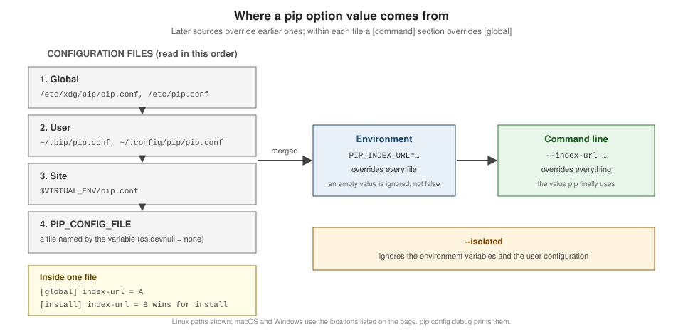

Configuration
|
This content was generated with the assistance of AI and should be verified against the official documentation before being relied on in production. |
Every pip option can be set in three places: on the command line, in a PIP_* environment variable, or in a configuration file.
This page covers the files, the variables and how they combine, for pip 26.2.2. The examples ran on CPython 3.14.6 on Linux on
2026-10-22, with HOME pointing at an empty scratch directory and the sandbox’s own PIP_* variables removed, so that only the
settings shown are in effect. Scratch paths are shortened to ….

Configuration files
pip reads INI files called pip.conf (pip.ini on Windows). Each option is written with its long name and without the leading
dashes, in a [global] section or a section named after a command:
[global]
index-url = http://localhost:8080/simple
timeout = 30
[install]
progress-bar = off
require-virtualenv = trueWhere they are
| Level | Linux and other Unix | macOS | Windows |
|---|---|---|---|
Global |
|
|
|
User |
|
|
|
Site |
|
as Linux |
|
If both the legacy and the current user file exist, values in the current one win. PIP_CONFIG_FILE names one more file that is
loaded last; set it to os.devnull (/dev/null, nul) to load no configuration files at all. When the file it names exists, the
user configuration file is not loaded.
pip config debug shows exactly which files pip looks at on this machine and which ones exist:
python -m pip config debugenv_var:
env:
global:
/etc/xdg/pip/pip.conf, exists: False
/etc/pip.conf, exists: False
site:
…/.venv/pip.conf, exists: False
user:
…/home/.pip/pip.conf, exists: False
…/home/.config/pip/pip.conf, exists: Falseenv_var lists the PIP_* variables in effect, and env the file named by PIP_CONFIG_FILE.
Loading order
Files are combined in the order global, user, site, then PIP_CONFIG_FILE; each file overrides the values of the files read
before it. So a timeout in your user file beats the one in /etc/pip.conf, and a venv’s own pip.conf beats both.
Source: pip: Loading order.
Naming, sections and value types
-
Names are the long option names without
--:index-url,require-virtualenv,find-links. -
Per-command sections (
[install],[download],[freeze], …) apply only to that command and override[global]. -
Booleans accept
true/false,yes/no,1/0. The documented quirk: for the options whose name starts withno-and that do not take a value (no-cache-dir,no-compile,no-warn-script-location), a falsy value turns the option on, sono-cache-dir = falsedisables the cache. -
Repeatable flags take a count:
verbose = 2is-vv,quiet = 0. -
Options that take several values (
find-links,trusted-host,extra-index-url) can be written on several lines, one value per line, in the order you want them passed.
[global]
find-links = http://download.example.com
[install]
find-links =
http://mirror1.example.com
http://mirror2.example.com
trusted-host =
mirror1.example.com
mirror2.example.comEnvironment variables
Every option has a variable PIP_<UPPER_LONG_NAME>, with dashes replaced by underscores: PIP_INDEX_URL, PIP_TIMEOUT=60,
PIP_REQUIRE_VIRTUALENV=1. Several values are separated by spaces (PIP_FIND_LINKS="http://mirror1.example.com http://mirror2.example.com"),
and repeatable flags take a number (PIP_VERBOSE=3).
An empty string is not false. The documentation warns that a variable set to an empty string "will not be treated as false". With
require-virtualenv = true in the user file, outside a venv:
PIP_REQUIRE_VIRTUALENV='' -> ERROR: Could not find an activated virtualenv (required).
PIP_REQUIRE_VIRTUALENV='0' -> error: externally-managed-environment
PIP_REQUIRE_VIRTUALENV='no' -> error: externally-managed-environment(Each line ran pip install --dry-run tomli-w with the variable set as shown. 0 and no override the file, so the command got as
far as the PEP 668 check of the base interpreter.) The no- quirk applies to variables as well: PIP_NO_CACHE_DIR=false
disables the cache just like PIP_NO_CACHE_DIR=1:
PIP_NO_CACHE_DIR='' -> /root/.cache/pip
PIP_NO_CACHE_DIR='0' -> ERROR: pip cache commands can not function since cache is disabled.
PIP_NO_CACHE_DIR='false' -> ERROR: pip cache commands can not function since cache is disabled.
PIP_NO_CACHE_DIR='1' -> ERROR: pip cache commands can not function since cache is disabled.(Each line ran pip cache dir.)
Source: pip: Environment variables.
Precedence
Command line overrides environment variables, which override configuration files; inside the files, a command section
overrides [global]. With [global] index-url = http://localhost:8080/simple in the user file, the first line of output of
pip download --no-deps -d dl tomli-w shows which index wins (pip prints Looking in indexes: only when the index is not PyPI):
| Setting | First output line |
|---|---|
only the file |
|
plus |
|
plus |
|
file only, with |
|
--isolated ignores the environment variables and the user configuration altogether, which is the quickest way to find out
whether a setting is behind a surprise.
Source: pip: Precedence / override order.
pip config
pip config reads and writes the files for you:
| Subcommand | Effect |
|---|---|
|
All values in effect, as |
|
One value. |
|
Write a value. |
|
Remove a value. |
|
Open the file in |
|
The files and variables, as above. |
The level is chosen with --global, --user or --site. Without one, get, set, unset and edit use the user file unless a
site file (the venv’s pip.conf) exists, in which case they use the site file. That rule is behind a classic surprise:
python -m pip config --user set global.index-url http://localhost:8080/simple
python -m pip config --site set install.require-virtualenv true
python -m pip config --user set install.progress-bar off
python -m pip config list
python -m pip config get global.index-url
python -m pip config --user get install.progress-barWriting to …/home/.config/pip/pip.conf
Writing to …/.venv/pip.conf
Writing to …/home/.config/pip/pip.conf
install.require-virtualenv='true'
global.index-url='http://localhost:8080/simple'
install.progress-bar='off'
ERROR: No such key - global.index-url
offconfig list shows the merged result, but config get global.index-url without a level looked only in the venv’s pip.conf,
which exists, and did not find the key. Name the level when you script pip config.
A pip.conf for the birdtally team
# ~/.config/pip/pip.conf
[global]
# the birdwatch index serves birdtally and redirects everything else to PyPI
index-url = http://localhost:8080/simple
require-virtualenv = true
timeout = 30
[install]
only-binary = :all:Do not put credentials in this file; use the keyring or a PIP_INDEX_URL set by your CI secret store. See
Authentication, Proxies & Certificates.
pip and Poetry
Poetry’s configuration is a different system: poetry config writes config.toml in Poetry’s own configuration directory, or
poetry.toml in the project with --local, and every setting has a POETRY_* variable. Poetry does not read pip.conf. See
Poetry: Configuration.